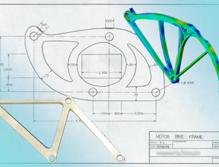

Former Projects



I was involved in the NCCR IM2 during the:
-
•phase 1: Individual projects IM2.VP and IM2.ACP (2002-2006)
-
•phase 2: Individual projects IM2.VP and IM2.MPR (2006-2009)
...
NCCR IM2
SNSF Graphical Models for Face Authentication (GMFACE) 2005-2009
...
SNSF Graphical Models for Face Authentication
I was the principal coordinator of the
-
•FP7 MOBIO “Mobile Biometry” project
I also participated to several European Projects:
-
•FP6 AMIDA
-
•FP5 BANCA
-
•FP5 ASSAVID
-
•FP5 FG-NET
-
•EU - COST 275
-
•FP5 - CIMWOS
...
European Projects
Principal investigator:
-
•CTI - Replay “Face Recognition Robust to Replay Attacks” (2010-2011)
-
•France Telecom - BioSign (2005)
-
•France Telecom - GHOST (2003)
-
•IdeArk - LogiFace (2004-2006)
-
•IdeArk - BioLogin (2004-2006)
-
•IdeArk - MultiFace (2004-2006)
Co-applicant:
-
•CTI - AVISION (2007-2008)
-
•IdeArk - SABBUCA (2007-2008)
Industrial Projects